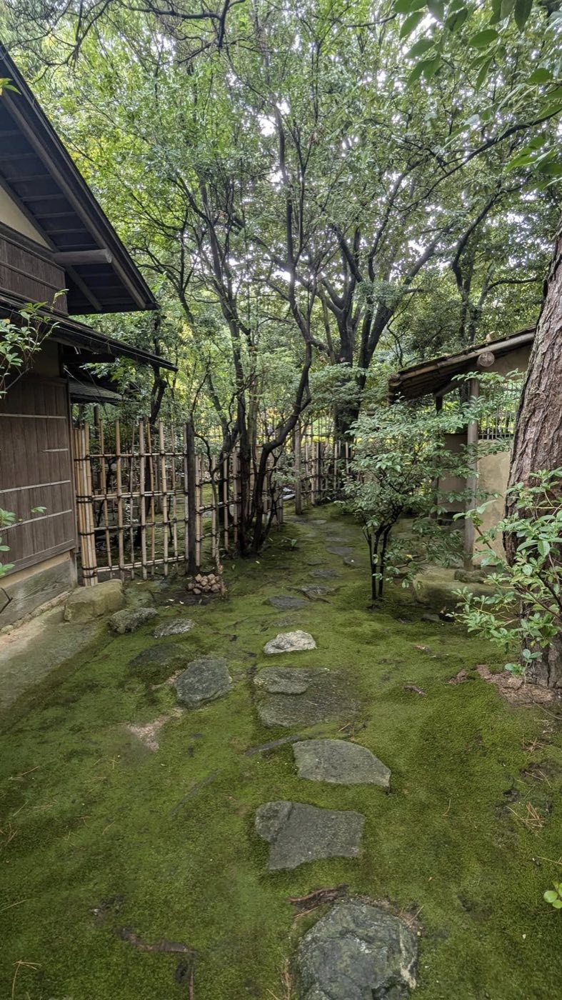

Executive Tea Session経営者向け茶道セッション
対象:経営者・役員・リーダー層
判断に追われる日々に、一服の余白を。少人数・非公開の茶の時間を通じて、判断力、所作、対話の質を整えます。経営合宿やオフサイトへの組み込みにも対応します。
- 1名〜少人数の非公開セッション
- 判断の質を高める「余白」の時間
- 経営合宿・役員オフサイトへの組み込み
- 対話を深める茶席の設計
Tsubaki Sasaki — Chado / Cultural Hospitality Designer
Transforming the Way of Tea into memorable hospitality.
笹木椿は、裏千家茶道を基盤に、企業・経営者・ホテルのための茶道体験、ホスピタリティ研修、文化体験設計を行います。
形式だけではない、相手を深く迎える所作と思想を、現代のビジネスとラグジュアリーな滞在体験へ翻訳します。

笹木 椿｜茶道家裏千家 専任講師 / Cultural Hospitality Designer
What I Do
茶道を「作法の体験」で終わらせず、対象と目的に合わせて設計してお届けします。すべて英語対応が可能です。
対象:経営者・役員・リーダー層
判断に追われる日々に、一服の余白を。少人数・非公開の茶の時間を通じて、判断力、所作、対話の質を整えます。経営合宿やオフサイトへの組み込みにも対応します。

対象:企業・ホテルスタッフ
茶道の作法には、おもてなしの技術が体系化されています。準備の力、相手の観察、言葉遣い、場の整え方を、実践を通じて学ぶ研修プログラムです。

対象:海外ゲスト・VIP・宿泊者
日本文化の奥行きに触れる、特別なプライベート茶会。道具、季節、所作、沈黙の意味まで、英語でも丁寧にご案内します。ゲストの背景に合わせて内容を設計します。

対象:ホテル・地域・ブランド
茶道を「飾り」ではなく、ゲストジャーニーの一部として設計します。ブランドや空間、ゲスト層に合わせた文化体験プログラム、空間演出、文化監修を行います。
For Hotels & Hospitality
海外から訪れるゲストにとって、茶道は単なる抹茶体験ではありません。道具、季節、所作、沈黙、もてなしの思想を通じて、日本文化の奥行きに触れる時間です。
笹木椿は、ホテルのブランドや空間、ゲスト層に合わせて、プライベート茶会、テーブル茶道、スタッフ向けホスピタリティ研修、文化体験プログラムを設計します。文化を装飾として添えるのではなく、ゲストジャーニーの一部として設計すること。それが、記憶に残る滞在とブランド価値への貢献につながると考えています。
For international guests, the tea ceremony is far more than a matcha tasting — it is a gateway into the depth of Japanese culture. I design private tea gatherings, table-style ceremonies, staff hospitality training, and cultural programs tailored to your property, brand, and guests, in English or Japanese.

For Executives & Companies
茶室では、迎える側は何日もかけて場を整え、迎えられる側は静かに一服と向き合います。そこにあるのは、準備の力、観察の力、そして立ち止まる力。いずれも、経営とチームづくりに直結する感覚です。
経営者向けの非公開セッションから、組織のホスピタリティを底上げする研修まで。広報PR・コーポレート領域での実務経験を生かし、抽象的な「心構え」ではなく、行動が変わるプログラムとして設計します。
Signature Philosophy
一服のお茶には、人と場を整える力があります。茶道には、お茶を点てる技術だけでなく、建築、道具、花、香、書、季節、料理、和菓子、そして人との関係性が含まれています。この思想が、すべてのプログラムの土台です。
一つひとつの所作には、相手を思う心があります。何を選び、どう迎えるか。そのすべてが静かなメッセージになります。
道具を選ぶことには、季節を受け取る感性があります。季節を味わう視点は、忙しい日々の中で自分を取り戻す入口になります。
一つの道具、一輪の花、一つの言葉に意味があります。選ぶという行為が、その場の意味をかたちづくります。
場を整えることには、そこに来る人を迎える準備があります。一服の時間が、人との距離を静かに変えていきます。
私は茶道を、過去の伝統として閉じるのではなく、現代のビジネスとホスピタリティに生きる知恵として翻訳していきたいと考えています。

About
16歳より裏千家茶道を学び、茶道歴は約15年。現在は福岡を拠点に、茶道の思想を現代のビジネス、ホスピタリティ、文化体験へ翻訳する活動を行っています。
企業では広報PR・コーポレート領域に携わり、言葉で価値を伝えること、場の意味を設計すること、人と人の関係性を丁寧につなぐことを実務として重ねてきました。その経験を生かし、企業研修、経営者向けセッション、ホテル・地域向けの文化体験設計を提供しています。
茶室の中では、一つの道具、一輪の花、一つの言葉に意味があります。何を選び、どのように置き、どのように迎えるか。そのすべてが、相手に向けた静かなメッセージになります。私はこの感覚を、日々のビジネスとおもてなしの現場につなげています。
茶道を「作法」ではなく、相手を深く迎えるための総合的な知恵として。格式への敬意は保ちながら、依頼してくださる企業やホテルの目的に合わせて、設計されたプログラムをお届けします。
Programs
ご依頼の検討に必要な情報です。内容はすべて、目的・会場・ゲスト層に合わせて個別に設計します。

Journal / Podcast
思想の背景を、より深く知っていただくためのPodcastです。茶道の稽古で感じたこと、道具や季節の話、仕事や人間関係に生きる茶道の視点を、堅苦しすぎず、でも敬意を持ってお話ししています。
ご依頼の前に、笹木椿の考え方や言葉のトーンに触れていただく入口としてもご活用ください。
Contact
ご依頼の種類に合わせて、下記よりご連絡ください。
ご提案書の作成(Request a proposal)にも対応しています。
info@momochidori-inc.com